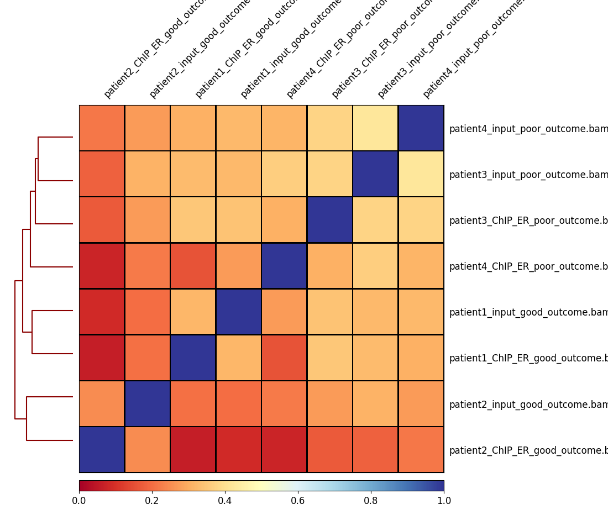
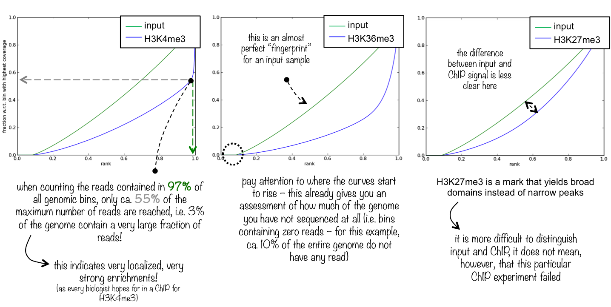
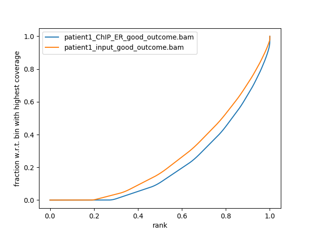
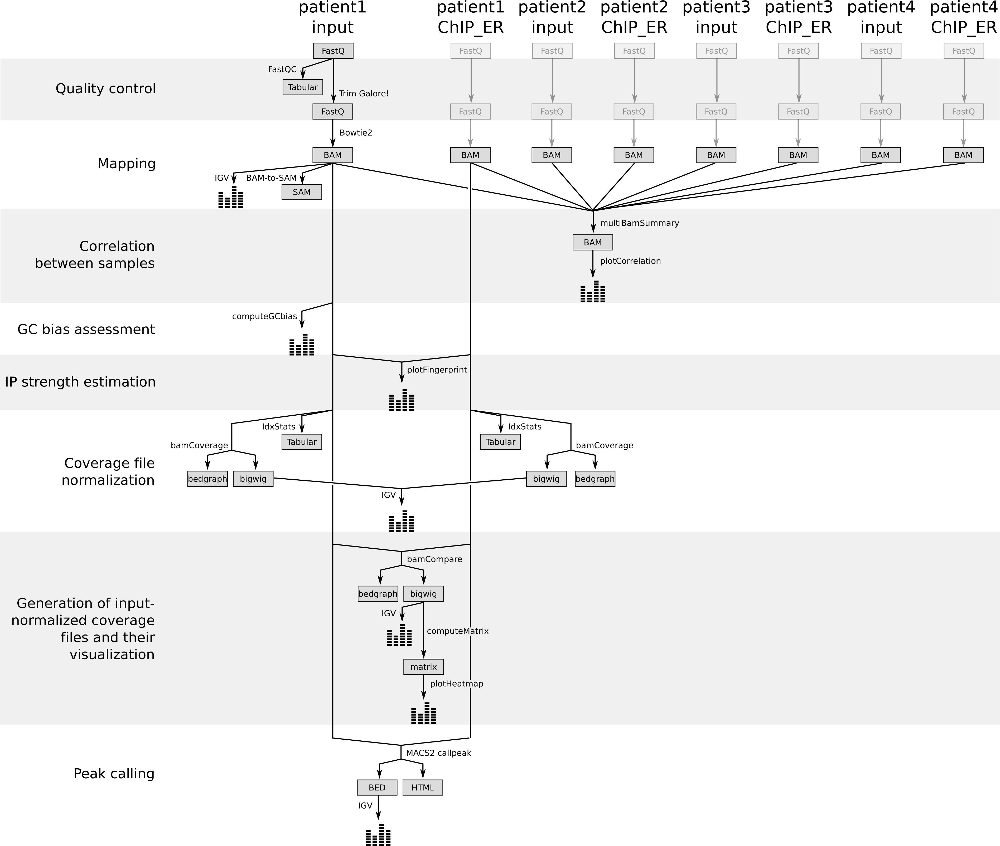

This exercise uses the dataset from the Nature publication by Ross-Inness et al., 2012.
The goal of this article was to identify the binding sites of the Estrogen receptor, a transcription factor known to be associated with different types of breast cancer.
To this end, ChIP-seq was performed in breast cancer cells from 4 patients of different outcomes (good and poor). For each ChIP-seq experiment there is a matching technical control, i.e. there are 8 samples in total:
Patient
Outcome
Treatment
Patient 1
Good
ChIP ER
Patient 1
Good
input (no immunoprecipitation step)
Patient 2
Good
ChIP ER
Patient 2
Good
input (no immunoprecipitation step)
Patient 3
Poor
ChIP ER
Patient 3
Poor
input (no immunoprecipitation step)
Patient 4
Poor
ChIP ER
Patient 4
Poor
input (no immunoprecipitation step)
Half of which are the so-called ‘input’ samples for which the same treatment as the ChIP-seq samples was done except for the immunoprecipitation step.
The input files are used to identify potential sequencing bias, like open chromatin or GC bias.
Because of the long processing time for the large original files, we have downsampled the original data and provide already processed data for subsequent steps.
Step 1: Quality control and treatment of the sequences
The first step of any ChIP-Seq data analysis is quality control of the raw sequencing data.
hands_on Hands-on: Quality control
Create a new history for this tutorial and give it a proper name
tip Tip: Creating a new history
Click the new-history icon at the top of the history panel
If the new-history is missing:
Click on the galaxy-gear icon (History options) on the top of the history panel
Select the option Create New from the menu
Import patient1_input_good_outcome from Zenodo or from the data library into the history
tip Tip: Importing data via links
Copy the link location
Open the Galaxy Upload Manager
Select Paste/Fetch Data
Paste the link into the text field
Press Start and Close the window
Click on the pencil icon once the file is imported
Click on Datatype in the central panel
Select fastqsanger as New Type
tip Tip: Importing data from a data library
Go into “Shared data” (top panel) then “Data libraries”
Click on “Training data” and then “Analyses of ChIP-Seq data”
Select interesting file
Click on “Import selected datasets into history”
Import in the history
As default, Galaxy takes the link as name, so rename them.
Inspect the file by clicking on the eye icon
question Questions
How are the DNA sequences stored?
What are the other entries?
solution Solution
The DNA sequences are stored in the second line of every 4-line group
This file is called a FastQ file. It stores sequence information and quality information. Each sequence is represented by a group of 4 lines with the 1st line being the sequence id, the second the sequence of nucleotides, the third a transition line and the last one a sequence of quality score for each nucleotide.
Run FastQCtool with
“Short read data from your current history” to the imported file
Inspect the generated files
It is often necessary to trim sequenced read, for example, to get rid of bases that were sequenced with high uncertainty (= low quality bases).
hands_on Hands-on: Quality control
Run Trim Galore!tool with
“Is this library paired- or single-end?” to Single-end
“Reads in FASTQ format” to the imported file
“Trim Galore! advanced settings” to Full parameter list
“Trim low-quality ends from reads” to 15
“Overlap with adapter sequence required to trim a sequence” to 3
tip Tip: Importing data from a data library
If your FASTQ files cannot be selected, you might check whether their format is FASTQ with Sanger-scaled quality values (fastqsanger). You can edit the data type by clicking on the pencil symbol.
Step 2: Mapping of the reads
In order to figure where the sequenced DNA fragments originated from in the genome, the short reads must be aligned to the reference genome. This is equivalent to solving a jigsaw puzzles, but unfortunately, not all pieces are unique. In principle, you could do a BLAST analysis to figure out where the sequenced pieces fit best in the known genome. Aligning millions of short sequences this way may, however, take a couple of weeks.
Running Bowtie2
Nowadays, there are many read alignment programs for shotgun sequenced DNA, Bowtie2 being one of them.
hands_on Hands-on: Mapping
Bowtie2tool with
“Is this single or paired library” to Single-end
“FASTA/Q file” to the Trim Galore! output with the trimmed reads
“Will you select a reference genome from your history or use a built-in index?” to Use a built-in genome index
“Select reference genome” to Human (Homo sapiens): hg18
question Questions
How many reads where mapped?
solution Solution
This information can be accessed by clicking on the resulting history entry. You can see some basic mapping statistics once the alignment is completed. 16676 (66.96%) were mapped exactly 1 time and 7919 (31.80%) aligned >1 times. The overall alignment rate is then 98.76%.
The read alignment step with bowtie2 resulted in a compressed, binary file (BAM) that is not human-readable. It’s like the zipped version of a text file.
We will show you two ways to inspect the file:
Visualization using a Genome Browser
Converting the binary format into its text file equivalent
Visualization using a Genome Browser
hands_on Hands-on: Visualization of the reads in IGV
Click on the display with IGV local to load the reads into the IGV browser
Zoom at the start of chromosome 11 (or chr11:1,562,200-1,591,483)
The reads have a direction: they are mapped to the forward or reverse strand, respectively. When hovering over a read, extra information is displayed
question Questions
Some reads have colored lines included. What is this?
solution Solution
Try to zoom in in one of those lines and you will see the answer!
comment Comments
Because the number of reads over a region can be quite large, the IGV browser by default only allows to see the reads that fall into a small window. This behaviour can be changed in the IGV preferences panel.
Inspection of the SAM format
As mentioned above, you can convert the binary BAM file into a simple (but large!) text file, which is called a SAM (Sequence Alignment Map) file.
hands_on Hands-on: Conversion into a SAM file
BAM-to-SAMtool with
“BAM File to Convert” to the file generated by Bowtie2
“Header options” to Include header in SAM output
Inspect the file by clicking on eye icon
A SAM file is a file with
A header with the chromosome names and lengths
A file content as a tabular file with the location and other information of each read found in the FASTQ file and the mapping information
question Questions
Which information do you find in a SAM/BAM file? What is the additional information compared to a FASTQ file.
solution Solution
Sequences and Quality information, like FASTQ
Mapping information; Location of the read on the chromosome; Mapping quality …
We already checked the quality of the raw sequencing reads in the first step.
Now we would like to test the quality of the ChIP-seq preparation, to know if your ChIP-seq samples are more enriched than the control (input) samples.
Correlation between samples
To assess the similarity between the replicates of the ChIP and the input, respectively, it is a common technique to calculate the correlation of
read counts on different regions for all different samples.
We expect that the replicates of the ChIP-seq experiments should be clustered more closely to each other than the replicates of the input sample.
That is, because the input samples should not have enriched regions included - remember the immuno-precipitation step was skiped during the sample preparation.
To compute the correlation between the samples we are going to to use the QC modules of deepTools (http://deeptools.readthedocs.io/), a software package for the QC, processing and analysis of NGS data. Before computing the correlation a time consuming step is required, which is to compute the read coverage over a large number of regions from each BAM file. For this we will use the tool multiBamSummarytool.
To do that, we need at first to catch up for all our samples and re-run the previous steps (quality control and mapping) on each sample.
To save time, we already did that and we can now work directly on the BAM files of the 8 samples
hands_on Hands-on: Correlation between samples
Create a new history
Import the 8 BAM files from Zenodo or from the data library into the history
This corresponds to the length of the fragments that were sequenced; it is not the read length!
“Distance between bins” to 500000 (to reduce the computation time for the tutorial)
“Region of the genome to limit the operation to” to chr1 (to reduce the computation time for the tutorial)
Using these parameters, the tool will take bins of 100 bp separated by 500,000. For each bin the overlapping reads in each sample will be computed
plotCorrelationtool with
“Matrix file from the multiBamSummary tool” to the generated multiBamSummary output
To compute and visualize the sample correlation we use plotCorrelation from deepTools. This is a fast process that allows the user to quickly try different color combinations and outputs. Feel free to try different parameters.
question Questions
Figure 1: Correlation scores between the 8 samples
How are your samples clustered? Does that correspond to your expectations?
solution Solution
Badly, this is due to the subsampling of our data. You should expect better results from your real data.
Expected is that your inputs and your ChIP samples cluster together.
To evaluate the quality of the immuno-precipitation step, we can compute the IP strength. It determines how well the signal in the ChIP-seq sample can be differentiated from the background distribution of reads in the control sample. To do that we take the data for one Patient and compare the input sample and the ChIP-seq sample.
“Bam file” to patient1_input_good_outcome and patient1_ChIP_ER_good_outcome
“Region of the genome to limit the operation to” to chr1
The plotFingerprint tool generates a fingerprint plot. You need to intepret it to know the IP strength. The deepTools documentation explains it clearly:
Figure 2: How to interpret a fingerprint plot? Image extracted from the deepTools documentation
question Questions
Figure 3: Fingerprint plot for the Patient 1 to estimate the IP strength
What do you think about the quality of the IP for this experiment?
solution Solution
The difference between input and ChIP signal is not totally clear. 20% of chromosome 1 are not sequenced
at all and the ChIP signal is only slightly more enrichted then the input.
hands_on (Optional) Hands-on: IP strength estimation (other samples)
Run the same analysis on data of the 3 other patients
Step 4: Normalization
We would like to know where the binding sites of the estrogen receptor are located. For this we need
to extract which parts of the genome have been enriched (more reads mapped) within the samples that underwent immunoprecipitation.
For the normalization we have two options.
Normalization by sequencing depth
Normalization by input file
Generation of coverage files normalized by sequencing depth
We first need to make the samples comparable. Indeed, the different samples have usually a different sequencing depth, i.e. a different number of reads.
These differences can bias the interpretation of the number of reads mapped to a specific genome region.
hands_on Hands-on: Coverage file normalization
IdxStatstool with
“BAM file” to “Multiple datasets”: patient1_input_good_outcome and patient1_ChIP_ER_good_outcome
question Questions
What is the output of this tool?
How many reads has been mapped on chr2 for the input and for the ChIP-seq samples?
solution Solution
This tool estimates how many reads mapped to which chromosome. Furthermore, it tells the chromosome lengths and naming convention (with or without ‘chr’ in the beginning)
1,089,370 for ChIP-seq samples and 1,467,480 for the input
bamCoveragetool with
“BAM file” to “Multiple datasets”: patient1_input_good_outcome and patient1_ChIP_ER_good_outcome
“Bin size in bases” to 25
“Scaling/Normalization method” to Normalize coverage to 1x
“Effective genome size” to hg19 (2451960000)
“Coverage file format” to bedgraph
question Questions
What are the different columns of a bedgraph file?
solution Solution
chrom, chromStart, chromEnd and a data value
bamCoveragetool with the same parameters but to generate a bigWig output file
IGVtool to inspect both signal coverages (input and ChIP samples) in IGV
question Questions
What is a bigWig file?
solution Solution
A bigWig file is a compressed bedgraph file. Similar in relation as BAm to SAM, but this time just for coverage data. This means bigWig and bedgraph
files are much smaller than BAM or SAM files.
Generation of input-normalized coverage files and their visualization
To extract only the information induced by the immunoprecipitation, we normalize for each patient the coverage file for the sample that underwent immunoprecipitation by the coverage file for the input sample. Here we use the tool bamCompare which compare 2 BAM files while caring for sequencing depth normalization.
hands_on Hands-on: Generation of input-normalized coverage files
bamComparetool with
“First BAM file (e.g. treated sample)” to patient1_ChIP_ER_good_outcome
“Second BAM file (e.g. control sample)” to patient1_input_good_outcome
“Bin size in bases” to 50
“How to compare the two files” to Compute log2 of the number of reads ratio
“Coverage file format” to bedgraph
“Region of the genome to limit the operation to” to chr11 (to reduce the computation time for the tutorial)
question Questions
What does mean a positive or a negative value in the 4th column?
solution Solution
The 4th column contains the log2 of the number of reads ratio between the ChIP-seq sample and the input sample. A positive value means that the coverage on the portion is more important in the ChIP-seq sample than in the input sample
bamComparetool with the same parameters but to generate a bigWig output file
IGVtool to inspect the log2 ratio
Remember that the bigWig file contains only the signal on chromosome 11!
Step 5: Detecting enriched regions (peak calling)
We can also call the enriched regions, or peaks, found in the ChIP-seq samples.
hands_on Hands-on: Peak calling
MACS2 callpeaktool with
“ChIP-Seq Treatment File” to patient1_ChIP_ER_good_outcome
“ChIP-Seq Control File” to patient1_input_good_outcome
“Effective genome size” to H. sapiens (2.7e9)
“Outputs” to Summary page (html)
comment Comments
The advanced options may be adjusted, depending of the samples.
If your ChIP-seq experiment targets regions of broad enrichment, e.g. non-punctuate histone modifications, select calling of broad regions.
If your sample has a low duplication rate (e.g. below 10%), you might keep all duplicate reads (tags). Otherwise, you might use the ‘auto’ option to estimate the maximal allowed number of duplicated reads per genomic location.
IGVtool to inspect with the signal coverage and log2 ratio tracks
The called peak regions can be filtered by, e.g. fold change, FDR and region length for further downstream analysis.
Step 6: Plot the signal on the peaks between samples
Plotting your region of interest will involve using two tools from the deepTools suite.
computeMatrix : Computes the signal on given regions, using the bigwig coverage files from different samples.
plotHeatmap : Plots heatMap of the signals using the computeMatrix output.
ptionally, you can also use plotProfileto create a profile plot using to computeMatrix output.
computeMatrix
hands_on Hands-on: Visualization of the coverage
UCSC Maintool with
“assembly” to hg18
“track” to RefSeq genes
“region” to position with chr11
“output format” to BED
“Send output to” to Galaxy
computeMatrixtool with
“Regions to plot” to the imported UCSC file
“Score file” to the bigwig file generated by bamCompare
“computeMatrix has two main output options” to scale-regions
This option stretches or shrinks all regions in the BED file (here: genes) to the same length (bp) as indicated by the user
“Show advanced options” to yes
“Convert missing values to 0?” to Yes
This tool prepares a file with scores per genomic region, which is required as input for the next tool.
plotHeatmap
hands_on Hands-on: Visualization of the coverage
plotHeatmaptool with
“Matrix file from the computeMatrix tool” to the generated matrix
“Show advanced options” to yes
“Did you compute the matrix with more than one groups of regions?” to the correct setting
Conclusion
Figure 4: Different steps of the tutorials with the generated files
Additional exercise (if you have finished all above)
Additional Quality control : GC bias assessment
A common problem of PCR-based protocols is the observation that GC-rich regions tend to be amplified more readily than GC-poor regions.
We need to check that our samples do not have more reads from regions of the genome with high GC.
comment Comments
GC bias was for many years a big problem, but recent advances in sample preparation have solved this problem to a degree that you can skip this step more often.
For practical reasons, we will focus here only on one of our BAM files. With real data you should repeat these steps for all your samples.
question Questions
Can you guess why it makes more sense to check the input files for GC bias?
solution Solution
We only want to assess the bias induced by the PCR-based protocols. This is not possible with the ChIP samples, as the enriched regions (binding sites) can have a potential GC enrichment on their own.
hands_on Hands-on: GC bias assessment
computeGCbiastool with
“BAM file” to patient1_input_good_outcome
“Reference genome” to locally cached
“Using reference genome” to Human (Homo sapiens): hg18
“Effective genome size” to hg19 (2451960000)
“Fragment length used for the sequencing” to 300
“Region of the genome to limit the operation to” to chr1 (to reduce the computation time for the tutorial)
question Questions
Figure 5: Estimation of the GC bias for the input sample for the Patient 1
Does this dataset have a GC bias?
solution Solution
There is no significantly more reads in the GC-rich regions.
Plotting heatmap from multiple samples with clustering
hands_on Hands-on: plotting multiple samples
Run bamComparetool with same parameters as above, for all 4 patients:
“First BAM file (e.g. treated sample)” to patient2_ChIP_ER_good_outcome, patient3_ChIP_ER_good_outcome, patient4_ChIP_ER_good_outcome
“Second BAM file (e.g. control sample)” to patient2_input_good_outcome, patient3_input_good_outcome, patient4_input_good_outcome
Perform peak calling again using treatment file : patient2_ChIP_ER_good_outcome and control patient2_input_good_outcome, using macs2 parameters same as above.
Concatenate the outputs (summits in BED) from patient1 and patient2 using Operate on Genomic Intervals –> Concatenate
Sort the output Operate on Genomic Intervals –> sortBED
Merge the overlapping intervals using Operate on Genomic Intervals –> MergeBED
computeMatrixtool with the same parameters but:
Regions to plot : select the merged bed from above
Output option : reference-point
The reference point for the plotting: center of region
Distance upstream of the start site of the regions defined in the region file : 3000
Distance downstream of the end site of the given regions: 3000
With this option, it considers only those genomic positions before (downstream) and/or after (upstream) a reference point (e.g. TSS, which corresponds to the annotated gene start in our case)
plotHeatmaptool with
“Matrix file from the computeMatrix tool” to the generated matrix
“Show advanced options” to yes
“Did you compute the matrix with more than one groups of regions?” to No, I used only one group
“Clustering algorithm” to Kmeans clustering
Inspect the output
keypoints Key points
ChIP-seq data requires multiple methods of quality assessment to ensure that the data is of high quality.
Multiple normalization methods exists depending on the availability of input data.
Heatmaps containing all genes of an organism can be easily plotted given a BED file and a coverage file.
Useful literature
Further information, including links to documentation and original publications, regarding the tools, analysis techniques and the interpretation of results described in this tutorial can be found here.
congratulations Congratulations on successfully completing this tutorial!
feedback Give us even more feedback on this content!
To give us more detailed feedback about these materials, please take a moment to fill in the extended Feedback Form.
 Friederike Dündar
Friederike Dündar Anika Erxleben
Anika Erxleben Bérénice Batut
Bérénice Batut Vivek Bhardwaj
Vivek Bhardwaj Fidel Ramirez
Fidel Ramirez